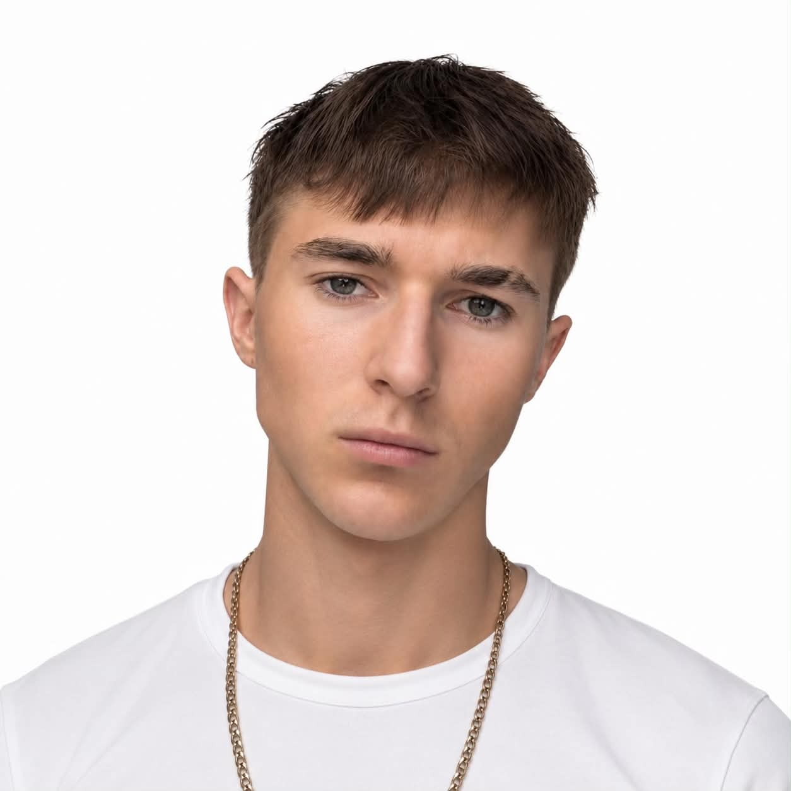

Cel przed narzędziem
Najpierw rozpoznanie potrzeb, później dobór technologii. Bez dokładania złożoności, która nie jest potrzebna.
Niezależna inicjatywa technologiczna z Poznania. Doradztwo w automatyzacji, projektowanie stron internetowych i integracja systemów AI pod jedną marką.
Founder & CEO Cereaxis Labs
Marka na etapie startowym
Województwo wielkopolskie
Cereaxis Labs powstało w październiku 2026 roku jako autorska marka Michała Florczaka. Przedsięwzięcie jest obecnie na etapie startowym i nie stanowi jeszcze zarejestrowanej działalności gospodarczej.
Rozwijam je wokół trzech obszarów: rekomendowania firmom odpowiedniej automatyzacji, tworzenia profesjonalnych stron oraz łączenia rozwiązań AI z istniejącymi procesami i narzędziami.
Punktem wspólnym jest zrozumienie kontekstu. Nie każdy problem wymaga rozbudowanego systemu. Czasem potrzebna jest dobra strona, czasem prosta integracja, a czasem uporządkowany plan zmian.
Najpierw rozpoznanie potrzeb, później dobór technologii. Bez dokładania złożoności, która nie jest potrzebna.
Uzgodnione zadania, rezultat i warunki realizacji. Dzięki temu wiadomo, co jest częścią projektu.
Rozmawiasz z osobą odpowiedzialną za projekt — od ustaleń po jego przekazanie.
Rozwój Cereaxis Labs opiera się na doprecyzowaniu oferty, rozmowach o realnych potrzebach i budowaniu własnego sposobu realizacji projektów.
Powstanie marki i określenie kierunku: automatyzacja, strony WWW i integracje AI.
Dopracowywanie zakresu współpracy, komunikacji i standardów przekazywania rozwiązań.
Kolejne kroki wynikają z uzgodnionych projektów i zastosowań, w których technologia ma praktyczne uzasadnienie.

Nazywam się Michał Florczak. Rozwijam Cereaxis Labs, łącząc projektowanie rozwiązań AI, automatyzację i tworzenie stron z szerszym zainteresowaniem technologią, systemami mechanicznymi i rynkami cyfrowymi.
Zacznijmy od celu. Dobierzemy technologię, zakres i następny krok.